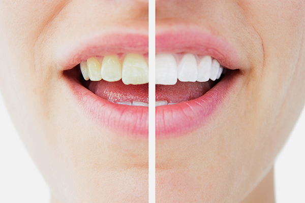

치아 미백이 필요할 때
변색으로 인한 치아미백은 사람 마다 구강 내 상태가 다양하고 치료 결과에 대한 기대치가 다릅니다.
치아 미백이 필요한 경우
-
치아의 색깔에 콤플렉스를 가진 분
-
밝은 미소를 갖고 싶거나 결혼이나 취업을 앞두신 분
-
자신 있게 환한 치아를 보이며 웃고 싶으신 분
-
선천적, 유전적 변색
-
선천적 치아변색이나 약물(테트라사이클린, 불소)로 인한 치아 변색
-
음료, 담배로 인한 색소침착 변색 ex)음료, 담배
치아 미백 시 주의사항
-
치아미백 전 치과의사의 검사와 정확한 진단
-
미백 전에는 치아착색음료는 삼가기
-
치료 시 치아가 약간 시릴 수 있으나 이는 정상 반응
-
과도하게 민감할 시 치과의사의 상담이 필요할 수 있음
-
보철물이나 레진 등의 인공 보철물에는 미백이 되지 않음
-
과도한 흡연과 색소가 다량 함유된 음식물 섭취를 자제
-
정기적인 구강 검사가 필요
치아 미백은 그 원인과 증상에 따라 치료방법이 다르며 색이 다시 어두워지거나 치아 과민증 등의 부작용이 발생할 수 있으므로 치료 전 치과의사와 자세한 상담을 해야합니다.